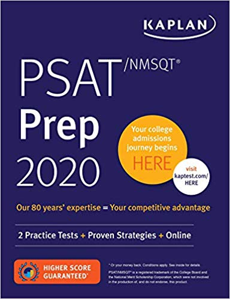

It is important to retake the PSAT even though you are no longer in the 10th grade. This is because you can qualify for the National Merit Scholarsip Program. as well as the National Hispanic Recognition Program. These programs provide recognition, look good on your college applications, and provide scholarship opportunities, so you do not have to pay as much money for college.
English Section: 75questions; 45 mins
Math Section: 60questions; 60 mins
Reading Section: 40questions; 35mins
Science Section: 40questions; 35mins
Writing Section (Optional): 1 essay; 40mins
Reading Section: 52questions; 65 mins
Writing & Language: 44questions; 35mins
Math No Calc. Section: 20questions; 25 mins
Math Calc. Section: 38questions; 55 mins
Essay (Optional): 1 esay; 50mins